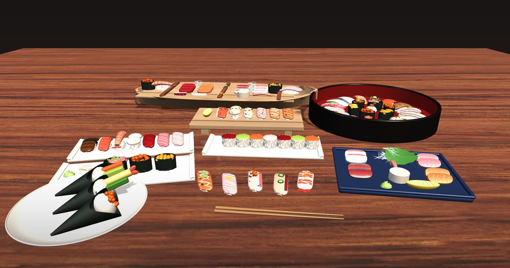

Sushi Collection
135 sushi & sashimi · 256 prefabs · Free
A free collection of 135 sushi and sashimi, built from modular layers so you can mix rice, toppings, garnish and sauces into your own combinations.
What's inside
- 36 nigiri toppings + 10 aburi (seared) variants
- Gunkan, hosomaki, futomaki, uramaki, rainbow rolls and temaki
- Inari, oshizushi, temari and chirashi
- 15 sashimi cuts, garnishes, plates, geta boards and sushi oke
- 24 combos and 24 ready-made platters as nested prefabs
- Built-in + URP materials, demo scene and PDF guide